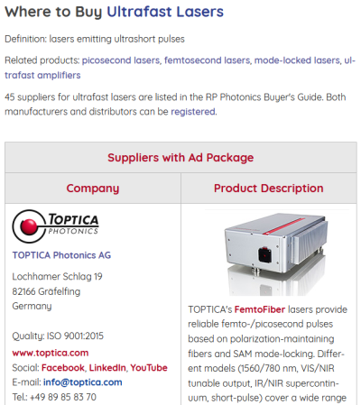
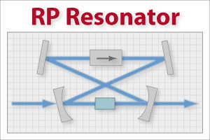
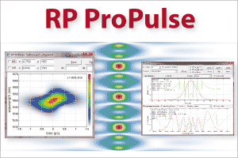

Encyclopedia of Laser Physics and Technology

- über 650 ausführliche Enzyklopädieartikel über Photonik, Lasertechnologie, Faseroptik und allgemeine Optik – die größte und bekannteste Photonik-Enzyklopädie weltweit
- frei zugänglich im Internet (open access, ohne Registrierung) und als zweibändiges Buch
- verbunden mit dem RP Photonics Buyer's Guide: finden Sie Lieferanten für hunderte von Photonik-Produkten
- zugehöriger Blog: das Photonics Spotlight
- Glossar für Begriffe der Photonik, Artikel nach Kategorien gruppiert, Photonik-Quiz
- extrem beliebte Website
- interessante Angebote für Werbung
Der Autor der Enzyklopädie ist Dr. Paschotta, der Gründer von RP Photonics.
RP Photonics Buyer's Guide
Das beste Lieferantenverzeichnis für Photonik und Lasertechnologie
- eng verknpüft mit der Encyclopedia of Laser Physics and Technology
- umfangreiche und hochwertige technische Informationen in nächster Nähe
- einfach anzuwenden, praktisch und schnell, mit Respekt vor dem Datenschutz
- enorme Verkehrszahlen und ausgezeichnetes Google-Ranking
- perfektes Erreichen der Zielgruppen für Photonik-Lieferanten
Dies ist eine ausgezeichnete Grundlage für effektive Werbung!
RP Fiber Power
Analysieren und optimieren Sie passive und aktive Faseroptik:
- Faserverstärker und Faserlaser
(kontinuierlich laufend, gütegeschaltet, modengekoppelt, mehrstufig, …) - einmodige und mehrmodige Fasern, Doppelkernfasern, Mehrkernfasern, …
- Faserkoppler
- Telecom-Systeme
Wer ernsthaft mit Faseroptik arbeitet, möchte das kaum ohne RP Fiber Power tun!
Neue Version V6: Formulare können für nun spezifische Anwendungen maßgeschneidert werden. Wer sich nicht mit den technischen Details befassen möchte, lässt einfach solche Formulare im Rahmen des Supports erstellen!
RP Resonator
Designen und optimieren Sie Laserresonatoren:
- Berechnen Sie alle Modengrößen.
- Studieren Sie die Justageempfindlichkeit.
- Parametrisieren Sie Ihre Modelle.
- Optimieren Sie nach beliebigen Kriterien.
Durch die leistungsfähige Skriptsprache ist die Flexibilität von RP Resonator unübertroffen!
RP ProPulse
Untersuchen Sie die Pulsformung in
- passiv und aktiv modengekoppelten Lasern
- synchron gepumpten OPOs
- Faserverstärkern
Wenn Sie Pikosekunden- und Femtosekundenlaser wirklich verstehen möchten, brauchen Sie RP ProPulse! (Für faseroptische Geräte ist RP Fiber Power sogar noch besser geeignet.)
RP Coating
Analysieren und optimieren Sie die Designs von
- dielektrischen Spiegeln
- Filtern, dichroischen Spiegeln
- dispersiven Spiegeln
- Dünnschichtpolarisatoren
- SESAMs
- VECSELs
Profitieren Sie von einer unübertroffenen Flexibilität durch die eingebaute Skriptsprache:
- Verwenden Sie Sellmeier-artige Brechungsindexdaten in jeder beliebigen Form.
- Parametrisieren Sie Ihre Strukturen wie Sie wollen.
- Erzeugen Sie komplexe Strukturen automatisch.
- Importieren und exportieren Sie Daten mit beliebigen Formaten.
- Optimieren Sie nach beliebigen Kriterien.
RP Coating ist das Tool der Wahl – auch für die schwierigsten Fälle!
Technische Beratung
Produktdesigns, Problemlösungen, Berechnungen und Simulationen, Technologievergleiche, Mitarbeiterausbildung in den Fachgebieten
Laser und Verstärker |
Nichtlineare Optik |
Faseroptik |
Ultrakurze Pulse |
Rauschen |
Energie |
von einem renommierten Experten: Autor der Encyclopedia of Laser Physics and Technology, von anderen Büchern und über 100 wissenschaftlichen Artikeln.
Software von RP Photonics
Hochwertige Simulations- und Design-Software für optische Fasern, Faserlaser und -verstärker, Laserresonatoren, Pulspropagation und Dünnschichtoptik
 |
 |
|  |  |